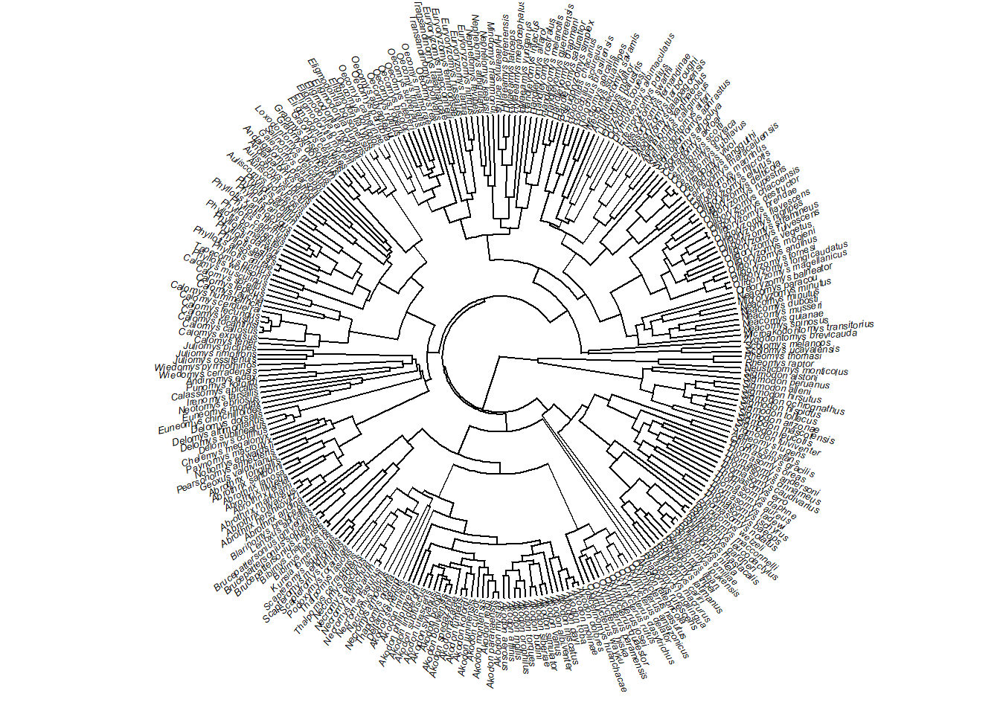
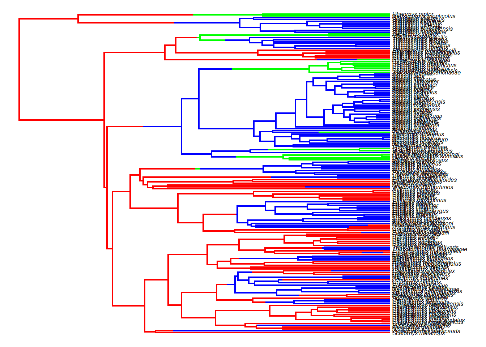

A evolução morfológica é inerentemente multivariada Capítulo 3. Contudo, variáveis resposta multivariadas representam um desafio analítico, especialmente para dados altamente multidimensionais. Neste capítulo, vamos explorar alguns métodos que permitem responder questões biológicas interessantes quando o nosso fenótipo de interesse é multivariado.
Primeiro, vamos carregar uma matriz resposta multivariada e uma filogenia. No exemplo, a matriz contém 26 colunas com coordenadas de Procrustes que descrevem a forma da mandíbula de 176 espécies de roedores sigmodontineos.
require(ape)
Carregando pacotes exigidos: ape
require(geiger)
Carregando pacotes exigidos: geiger
Carregando pacotes exigidos: phytools
Carregando pacotes exigidos: maps
require(phytools)require(geomorph)
Carregando pacotes exigidos: geomorph
Carregando pacotes exigidos: RRPP
Carregando pacotes exigidos: Matrix
# Carregar dadosdados<-read.table("dadospcm/sigmodontinae-shape.txt",h=T,row.names=1)head(dados)diet<-as.factor(dados$Diet) # A dieta é um código (Onivoro-1; Herbivoro-2; Insetivoro-3)names(diet)=rownames(dados)forma<-dados[,3:28]forma# Carregar filogeniatree<-read.nexus("dadospcm/sigmodontinae-tree.tre")plotTree(tree,fsize=0.4,ftype="i",type="fan",lwd=1)

# Match Speciesmatch.species<-treedata(tree,dados)tree<-match.species$phystr(tree)plotTree(tree,fsize=0.5,ftype="i",type="fan",lwd=1)
# terminais com cores{phylomorphospace(tree,PCA$scores[,1:2],label="off",control=list(col.node=NULL))cores<-setNames(c("blue","red","green"),levels(diet))col.group<-cores[match(diet,names(cores))]points(PCA$scores[,1],PCA$scores[,2],col=col.group,pch=16,cex=1.7)legend(-0.10,-0.06,legend=c("On","Hb","In"),pch=19,col=c("blue","red","green"))}
# PGLS Multivariada# Ajuste de formato da matriz para tornar compatível com o geomorphforma.array<-arrayspecs(forma,p=13,k=2) # transformação em arrayforma<-two.d.array(forma.array) # transformar de volta em matriz 2D# PGLSfit.pgls<-procD.pgls(forma~diet,tree)summary(fit.pgls)
26.5 Comparação de taxas evolutivas
forma.array<-arrayspecs(forma,p=13,k=2) # transformação em arraycompare.evol.rates(forma.array,tree,diet)
26.6 Modelos contínuos multivariados
O pacote mvMORPH (Clavel, Escarguel, and Merceron 2015) permite ajustar modelos evolutivos (e.g. BM,OU,EB) onde a variável de interesse é multivariada, e comparar os modelos usando verosimilhança (likelihood) e AIC. De forma mais acentuada do que no caso univariado, o número de parâmetros estimados pelo modelo pode ser um problema quando a variável de interesse é multi-dimensional (highly-dimensional datasets), como no caso de dados obtidos por morfometria geométrica. A confiabilidade do ajuste de modelos para Componentes Principais (PCs) individuais é baixa e pode ser enganosa, levando ao suporte incorreto para EB e OU (Uyeda, Caetano, and Pennell 2015). A confiabilidade do ajuste de modelos para um conjunto de PCs selecionados sob algum critério ainda é debatida. Atualmente, não existem métodos totalmente adequados (extensões diretas de métodos univariados) para ajustar modelos complexos para dados multidimensionais (Adams and Collyer 2018), porém veja os modelos com verossimilhança penalizada Clavel, Aristide, and Morlon (2019), Clavel and Morlon (2020).
Como exemplo, e para reduzir o tempo computacional, vamos considerar os dois primeiros componentes principais da forma PCA$scores[,1:2]. Vamos trabalhar com modelos que são análogos ao univariados: 1. BM1 - Browniano taxa única 2. BMM - Browniano múltiplas taxas 3. EB - Early Burst (taxas evolutivas desaceleram com o tempo) 4. OU1 - OU com único ótimo adaptativo 5. OUM - OU com múltiplos ótimos
require(mvMORPH)
Carregando pacotes exigidos: mvMORPH
Carregando pacotes exigidos: corpcor
Carregando pacotes exigidos: subplex
##
## mvMORPH package (1.2.1)
## Multivariate evolutionary models
##
## See the tutorials: browseVignettes("mvMORPH")
##
## To cite package 'mvMORPH': citation("mvMORPH")
##
Anexando pacote: 'mvMORPH'
O seguinte objeto é mascarado por 'package:geiger':
aicw
# Árvore filogenética com reconstrução em formato SIMMAPanc.tree<-make.simmap(tree,diet,model="ER",nsim=1)
Done.
anc.treeplot(anc.tree,cores,fsize=0.5,ftype="i")

# Ajuste modelos evolutivos multivariados# BM taxa únicamulti.BM1<-mvBM(anc.tree,PCA$scores[,1:2],model="BM1")multi.BM1# BM múltiplas taxasmulti.BMM<-mvBM(anc.tree,PCA$scores[,1:2],model="BMM")multi.BMMmulti.BMM$param$nparam# Early-Burstmulti.EB<-mvEB(anc.tree,PCA$scores[,1:2])multi.EB# OU otimo unicomulti.OU1<-mvOU(anc.tree,PCA$scores[,1:2],model="OU1")multi.OU1# OU otimos multiplosmulti.OUM<-mvOU(anc.tree,PCA$scores[,1:2],model="OUM")multi.OUM
Comparando modelos.
# Comparando modelosaic.scores<-setNames(c(multi.BM1$AICc,multi.BMM$AICc,multi.EB$AICc,multi.OU1$AICc,multi.OUM$AICc),c("BM1","BMM","EB","OU1","OUM"))aic.scoresaicw(aic.scores) # Delta AICc e AICc weightsaic.w(aic.scores)
26.7 Exercício - Modelos multivariados
Com os mesmos dados de forma e dieta para roedores sigmodontíneos: sigmodontinae-shape.txt sigmodontinae-tree.tre Simule 10 estimativas de estado ancestral para o caráter dieta. Usando 2 componentes principais da forma da mandíbula, ajuste modelos (com mvMORPH) brownianos com múltiplas taxas (BMM) e OU com múltiplos ótimos (OUM) usando os regimes reconstruídos em cada uma das 10 simulações. Calcule a média de AICc para cada simulação e compare o ajuste entre todos os modelos (BM1,BMM,EB,OU1,OUM). Você pode usar, por exemplo:
list.AIC<-matrix(NA,length(trees),2) for(i in 1:length(trees)){ fit.BMM<-mvBM(trees[[i]],PCA\(scores[,1:2],model="BMM")
fit.OUM<-mvOU(trees[[i]],PCA\)scores[,1:2],model=“OUM”) list.AIC[i,1]<-fit.BMM\(AICc
list.AIC[i,2]<-fit.OUM\)AICc }
E a função apply para calcular a média do AICc.
Adams, Dean C., and Michael L. Collyer. 2018. “Multivariate Phylogenetic Comparative Methods: Evaluations, Comparisons, and Recommendations.”Systematic Biology 67 (1): 14–31. https://doi.org/10.1093/sysbio/syx055.
Clavel, Julien, Leandro Aristide, and Hélène Morlon. 2019. “A Penalized Likelihood Framework for High-Dimensional Phylogenetic Comparative Methods and an Application to New-World Monkeys Brain Evolution.”Systematic Biology 68 (1): 93–116. https://doi.org/10.1093/sysbio/syy045.
Clavel, Julien, Gilles Escarguel, and Gildas Merceron. 2015. “Mvmorph: An r Package for Fitting Multivariate Evolutionary Models to Morphometric Data.”Methods in Ecology and Evolution 6 (11): 1311–19. https://doi.org/10.1111/2041-210X.12420.
Clavel, Julien, and Hélène Morlon. 2020. “Reliable Phylogenetic Regressions for Multivariate Comparative Data: Illustration with the MANOVA and Application to the Effect of Diet on Mandible Morphology in Phyllostomid Bats.”Systematic Biology 69 (5): 927–43. https://doi.org/10.1093/sysbio/syaa010.
Uyeda, Josef C., Daniel S. Caetano, and Matthew W. Pennell. 2015. “Comparative Analysis of Principal Components Can Be Misleading.”Systematic Biology 64 (4): 677–89. https://doi.org/10.1093/sysbio/syv019.